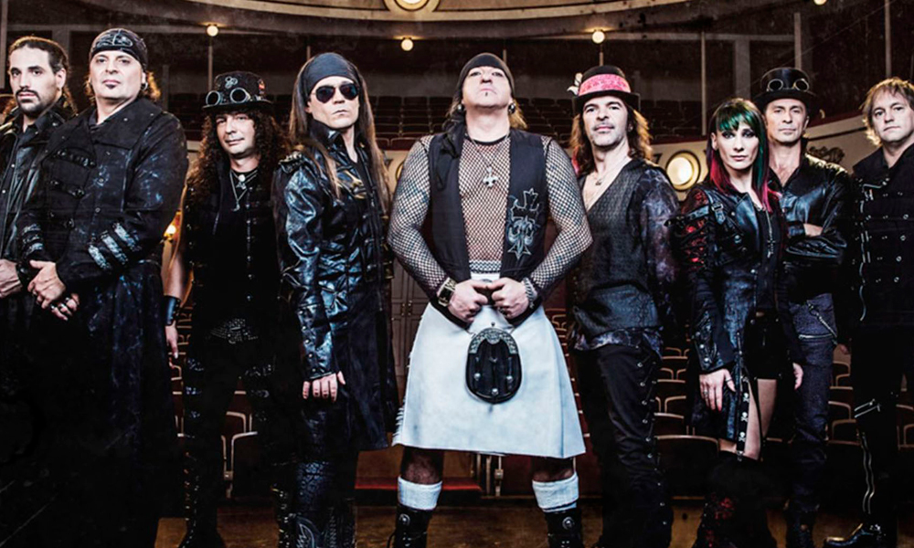
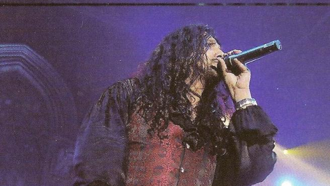

Mägo de Oz se originó en Madrid, España, en 1988 cuando Txus di Fellatio, junto con Juanma y Pedro, deciden formar una banda de rock a la que llamaron "Transilvania" en honor a sus ídolos, el grupo inglés Iron Maiden; poco después cambian su nombre por Mägo de Oz.
Es una de las bandas españolas más importantes del género Heavy Metal.
La primera formación estaba compuesta por Juanma, Pedro, David y Txus. En 1989 graban su primer demo, titulado "Y qué más da", seguido por "Canción de cuna para un bohemio", que más tarde se conocería como "Mago de Oz". Su música estaba abierta a una gran cantidad de estilos e influencias, pero todo su potencial musical se basa en el folk metal y la música celta.
En 1992 fue finalista en el Concurso Villa de Madrid, pero Chema, el guitarrista, decidió dejar el grupo entrando en su lugar Carlitos. Además, Txus deja el equipo de fútbol donde jugaba y se centra en el grupo, que comenzaría a grabar su primer álbum oficial. Tras dos grabaciones y la expulsión de Charlie y la reentrada de Eduardo Guzman en su lugar, lanzan su primer disco en 1994 producido por Txus y Alberto Plaza bajo el nombre de "Mägo de Oz".
CELEBRANDO SUS 32 AÑOS COMO BANDA

TODO SOBRE José Andrëa EL CANTANTE DE LA BANDA
